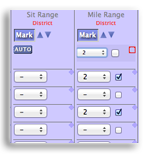

Expressbook saves time, improves communication and helps teachers do a better job

Click, Click, Click is Very, Very Quick
Expressbook's Auto-Fill feature allows entering marks for the entire class in seconds.
No Hassle Auto-Setup
Gradebook automatically loads correct standards and activities for the grade level and term.
District standards are enforced.
Standards can be marked mandatory. Grade level sensitive performance banding is built into the activity's mark scale.
Report Cards! Need we say more?
Specific format for each grade level. Runs on a separate server so grading performance is not affected by report card processing.
Knowledge is Power!
Feed your favorite analytics system. (We especially love Viewpoint.)